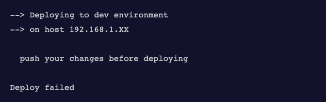

官方文档：
https://pm2.keymetrics.io/docs/usage/deployment/
npm install pm2 -gecosystem.json 文件其中列出了流程和部署环境
pm2 ecosystem示例：
{
// 应用部分
"apps" : [{
"name" : "API",
"script" : "app.js",
"env": {
"COMMON_VARIABLE": "true"
},
// 从--env生产开始时注入的环境变量
// http://pm2.keymetrics.io/docs/usage/application-declaration/#switching-to-different-environments
"env_production" : {
"NODE_ENV": "production"
}
},{
"name" : "WEB",
"script" : "web.js"
}],
// 部署部分
// 在这里您描述每种环境
"deploy" : {
"production" : {
"user" : "node",
// 仅通过将IP或主机名作为数组传递就可以实现多主机部署
"host" : ["212.83.163.1", "212.83.163.2", "212.83.163.3"],
// 本地 shh 私钥路径
"key": "/Users/test/.ssh/id_rsa",
// git分支
"ref" : "origin/master",
// 要克隆的Git仓库
"repo" : "git@github.com:repo.git",
// 目标服务器上应用程序的路径
"path" : "/var/www/production",
// Can be used to give options in the format used in the configura-
// tion file. This is useful for specifying options for which there
// is no separate command-line flag, see 'man ssh'
// can be either a single string or an array of strings
"ssh_options": "StrictHostKeyChecking=no",
// 克隆仓库之前执行的命令，如通过安装所需的软件来准备主机（例如：git）
//可以是多个命令，用字符“;”分隔
"pre-setup" : "apt-get install git",
// 克隆仓库后要在服务器上执行的命令
"post-setup": "ls -la",
// post-deploy 命令执行前，在本地执行的命令，可以是多个命令，以字符“;”分隔
"pre-deploy-local" : "echo 'This is a local executed command'"
// 克隆仓库后要在服务器上执行的命令
"post-deploy" : "npm install && pm2 startOrRestart ecosystem.json --env production"
// 必须在此env的所有应用程序中注入的环境变量,可在代码中引用
"env" : {
"NODE_ENV": "production"
}
},
"staging" : {
"user" : "node",
"host" : "212.83.163.1",
"ref" : "origin/master",
"repo" : "git@github.com:repo.git",
"path" : "/var/www/development",
"ssh_options": ["StrictHostKeyChecking=no", "PasswordAuthentication=no"],
"post-deploy" : "pm2 startOrRestart ecosystem.json --env dev",
"env" : {
"NODE_ENV": "staging"
}
}
}
}根据您的需要编辑该文件。
ssh-keygen -t rsa
ssh-copy-id node@myserver.compm2 deploy <configuration_file> <environment> setup实例
pm2 deploy ecosystem.json production setup此命令将在远程服务器上创建项目文件夹。
后续代码更新也是执行这个命令
pm2 deploy ecosystem.json production现在你的代码将被更新，安装，并启动
当我们修改完代码，在没有push的情况下执行部署命令时会收到类似如下提示：

这意味着您的本地系统中的更改还未被推送到 git 存储库中，而且由于部署脚本通过 git pull 获得更新，因此它们不会出现在您的服务器上。如果希望部署而不推送任何数据，可以附加 --force 选项:
pm2 deploy ecosystem.json production --force[1] https://pm2.keymetrics.io/docs/usage/deployment/: https://pm2.keymetrics.io/docs/usage/deployment/